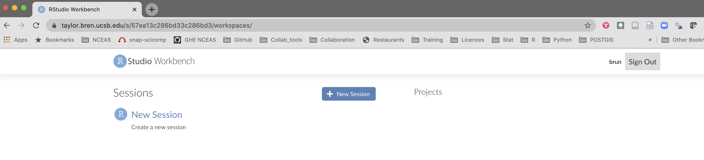
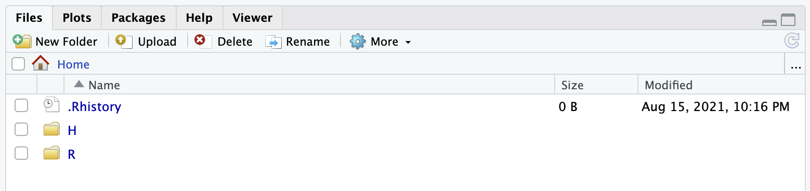
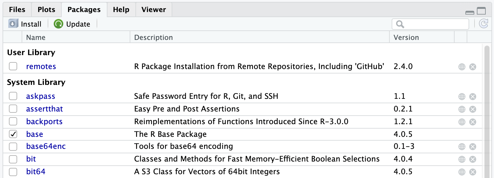

{kind=link}

Working on a remote server

Learning Objectives
In this lesson, you will learn:
- How to connect to a remote server
- Get familiar with RStudio server
- Get an introduction to the command line (CLI) & bash
Why working on a remote machine?
Often the main motivation is to scale your analysis beyond what a personal computer can handle. R being pretty memory intensive, moving to a server often provides you more RAM and thus allows to load larger data in R without the need of slicing your data into chunks. But there are also other advantages, here are the main for scientist:
- Power: More CPUs/Cores (24/32/48), More RAM (256/384GB)
- Capacity: More disk space and generally faster storage (in highly optimized RAID arrays)
- Security: Data are spread across multiple drives and have nightly backups
- Collaboration: shared folders for code, data, and other materials; same software versions
Warning
=> The operating system is more likely going to be Linux!!
More on this in a few minutes
Introduction to UNIX and its siblings
- UNIX
- Originally developed at AT&T / Bell Labs circa 1970. Has experienced a long, multi-branched evolutionary path
- POSIX (Portable Operating System Interface)
- a set of specifications of what an OS needs to qualify as “a Unix”, to enhance interoperability among all the “Unix” variants
Various Unices

- Linux (Linus Torvalds, 1991)
-
is not fully POSIX-compliant, but certainly can be regarded as functionally Unix
Some popular Linux distributions include Debian, Fedora Linux, Arch Linux, and Ubuntu. There are also commercial distributions such as Red Hat Enterprise Linux and SUSE Linux Enterprise. Android is actually Linux-based!
- OS X
- is a Unix!
Some Unix hallmarks
- Supports multi-users, multi-processes
- Highly modular: many small tools that do one thing well, and can be combined
- Culture of text files and streams
- Primary OS on HPC (High Performance Computing Systems)
- Main OS on which Internet was built
Connecting via IDE - Posit Workbench
From an user perspective, Posit Workbench is your familiar RStudio interface in your web browser. The big difference however is that with RStudio Server the computation will be running on the remote machine instead of your local personal computer. This also means that the files you are seeing through the RStudio Server interface are located on the remote machine. And this also include your R packages!!! This remote file management is the main change you will have to adopt in your workflow.
To help with remote files management, the RStudio Server interface as few additional features that we will be discussing in the following sections.
Connecting to MEDS Analytical Server
Reference
Enter your credentials
You are in!

- Click on the
New Sessionbutton. You can see that you are able to start both an R (Studio) and jupyter notebook session. Let’s take a few minutes to experiment with the different options.
For this session, we are going to select the RStudio option and hit Start Session.

You should now see a very familiar interface :) Except it is running on the server with a lot of resources at your fingertips!!
File structure
Let’s explore explore a little bit the file structure on the server. By default on a Linux server, you are located in the home folder. This folder is only accessible to you and it is where you can store your personal files on a server. You should see 2 folders: R and H

The R folder is where your local R packages will be installed, you can ignore it. The H is your H drive that the Bren School is offering to all its students. If you click on it you should see any files you have uploaded there.
Let us make a folder named github by click on the New Folder button at the top of the tab. We will use this folder (also named directory in linux/unix terms) to clone any GitHub repository.
R packages
If we go to the Packages tab, we can see a long list of packages that have already be installed by our system administrator (Brad). Those packages have been installed server wide, meaning that all the users have access to them.

A user can also installed her/his own packages. Let’s try to install the remote package that lets you install R packages directly from GitHub: install.packages("remotes"). Once done, note a new section that appeared on the Packages tab named User Library. Each of us have now its own copy of the package installed (in this R folder we were talking about a few minutes ago).

A few notes:
- In this example we will have made a better choice to have the
remotespackage installed once at the system level - Some R packages depend on external libraries that need to be installed on the server. Those libraries will have to be installed by the system administrator first before you can install the R package
- Installing an R package on a linux machine generally requires compilation of the code and will thus take more time to install than when you install it from pre-compiled binaries
Look now inside you R folder!!
The Command Line Interface (CLI)
The CLI provides a direct way to interact with the Operating System, by typing in commands.
Why the CLI is worth learning
- Might be the only interface you have to a High Performance Computer (HPC)
- Command statements can be reused easily and saved as scripts
- Easier automation and text files manipulation
A little bit of terminology
Command Line Interface (CLI): This is a user interface that lets you interact with a computer. It is a legacy from the early days of computers. Now a days computers have graphical user interfaces instead (MacOSX, Windows, Linux, …)Terminal: It is a an application that lets you run a command line interface. It used to be a physical machine connected to a mainframe computerShell: It is the program that runs the command line. There are many different shells, the most common beingbash(Bourne Again SHell) which is installed by default in many Linux distributions
The pitch
Not convinced? Check this out: the CLI pitch
The Terminal from RStudio
You can access the command line directly from RStudio by using the Terminal tab next to your R console.
 ### Navigating and managing files/directories in *NIX
### Navigating and managing files/directories in *NIX

pwd: Know where you arels: List the content of the directorycd: Go inside a directory
Some pseudo directory names. Wherever you are:
~: Home directory.: Here (current directory)..: Up one level (upper directory)
Let’s put this into action:
- go to my “Home” directory:
cd ~ - go up one directory level:
cd .. - list the content:
ls - list the content showing hidden files:
ls -anote that-ais referred as an option (modifies the command)
More files/directories manipulations:
mkdir: Create a directorycp: Copy a filemv: Move a file it is also how you rename a file!rm/rmdir: Remove a file / directory use those carefully, there is no return / Trash!!
Note: typing is not your thing? the <tab> key is your friend! One hit it will auto-complete the file/directory/path name for you. If there are many options, hit it twice to see the options.
Permissions
All files have permissions and ownership.

- List files showing ownership and permissions:
ls -l
brun@workbench-1:/courses/EDS214$ ls -l
total 16
drwxrwxr-x+ 3 brun esmdomainusers 4096 Aug 20 04:49 data
drwxrwxr-x+ 2 katherine esmdomainusers 4096 Aug 18 18:32 example You can change those permissions:
- Change permissions:
chmod - Change ownership:
chown
Tip
Clear contents in terminal window: clear
General command syntax
command [options] [arguments]
where command must be an executable file on your PATH * echo $PATH
and options can usually take two forms * short form: -a * long form: --all
You can combine the options:
ls -ltrhWhat do these options do?
man ls
Tip
hit spacebar to get to the next page of the manual hit q to exit the help
Getting things done
Some useful, special commands using the Control key
- Cancel (abort) a command:
Ctrl-cNote: very different than Windows!! - Stop (suspend) a command:
Ctrl-z Ctrl-zcan be used to suspend, then background a process
Process management
- Like Windows Task Manager, OSX Activity Monitor
top,ps,jobs(hitqto get out!)killto delete an unwanted job or process- Foreground and background:
&
What about “space”
- How much storage is available on this system?
df -h - How much storage am “I” using overall?
du -hs <folder> - How much storage am “I” using, by sub directory?
du -h <folder> - How much RAM is used?
free -h
Existential questions
- What is your username?
whoami - What is today’s date?
date - Where are the programs you are using?
whereis Ralso trywhich -a python - What is the kernel version of your OS:
uname -a - How long since last reboot:
uptime - Which shell are you using?
echo $0
History
- See your command history:
history - Re-run last command:
!! - Re-run 32th command:
!32 - Re-run 5th from last command:
!-5 - Re-run last command that started with ‘c’:
!c
A sampling of simple commands for dealing with files
wccount lines, words, and/or charactersdiffcompare two files for differencessortsort lines in a fileuniqreport or filter out repeated lines in a file
Get into the flow, with pipes

stdin, stdout, stderrwc -l *.TXT
wc -l *.TXT | sort -n- note use of
*as character wildcard for zero or more matches (same in Mac and Windows) ?matches single character;
Here the wc -l command, which counts the number of lines in files, is given file names on the command line, so it counts the lines in those files. It writes its output to stdout. sort -n sorts lines in files. It was given no files to sort, so it sorts whatever lines come in via stdin. By piping these together (i.e., by hooking wc’s stdout to sort’s stdin using the pipe operator), the output from wc -l is thereby sorted.
There are various operators for redirecting where stdin comes from and where stdout and stderr go:
< file: read stdin from file> file: write stdout to file2> file: write stderr to file>& file: write both stdout and stderr to file>> file: append stdout to file
Let’s write the above result to a file:
wc -l *.TXT | sort -n > csvcount.logCaution: except for >>, all forms of > are destructive: Bash overwrites any existing file with an empty file before the program is run.
Want to get rid of output you don’t want to see? Use the Unix black hole: >& /dev/null. (This is a cultural meme, you’ll see it on T-shirts and license plates.)
The above are the main redirections, but there are others.
To end a session, simply type exit or logout into the command line
Setting git on workbench-1 (if not yet done)
At the Terminal:
git config --global user.name "Jane Doe"
git config --global user.email janedoe@example.com
git config --global credential.helper 'cache --timeout=10000000'
git config --listSetting GitHub token on workbench-1
At the R Console:
# On your laptop
usethis::create_github_token() # This should open a web browser on GitHub
# On workbench-1
gitcreds::gitcreds_set()
usethis::git_sitrep()CLI Practice
Bonuses
vim text editor
This section is optional depending of our progress and interest. Vim is still the default text editor on many Linux distribution and it is good to know about its basics.
Advanced CLI
Want to know more cool tools your can use: CLI Adanved
Aknowledgements
This section reuses materials from NCEAS Open Science for Synthesis (OSS) intensive summer schools and other training. Contributions to this content have been made by Mark Schildhauer, Matt Jones, Jim Regetz and many others; and from EDS-213 10 bash essentials developed by Greg Janée